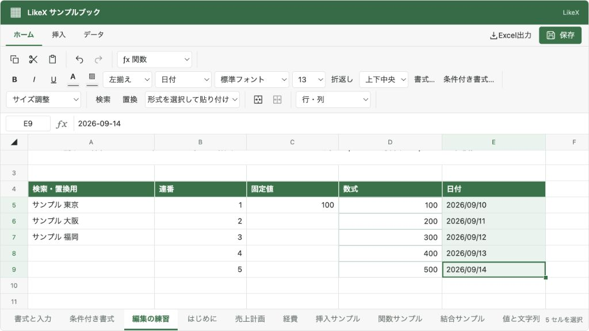

@likex/spreadsheet
コピー・貼り付け・オートフィル
セルをコピー・切り取りして貼り付け、値・数式・書式の選択や連番の展開を行います。
画面例を見る ↓形式を選択して貼り付け#
ヘッダーの「形式を選択して貼り付け」から選びます。通常の Ctrl+V / ⌘V は、従来どおり「すべて」の貼り付けです。
コピーは Ctrl+C / ⌘C、切り取りは Ctrl+X / ⌘X です。features.copy / cut / paste で個別に、features.clipboard でまとめて無効にできます。features.pasteSpecial: false は形式選択だけを無効にし、通常の貼り付けは残します。読み取り専用ではコピーを利用できますが、切り取り・貼り付けはできません。
| 形式 | 反映する内容 |
|---|---|
| すべて | 値・数式と、内部コピーに含まれる書式・コメント・結合・入力規則。 |
| 値のみ | 数式の計算結果。貼り付け先の書式・入力規則は維持。 |
| 数式のみ | コピーした入力値・数式。相対参照を移動先に合わせて調整。書式・入力規則は維持。 |
| 書式のみ | コピーしたセルの書式。値・数式・入力規則は維持。 |
数式のみでもコピー元の定数は貼り付けます。$A$1 のような絶対参照は動かしません。値のみでは、計算結果が文字列の 00123 や =文字列 であっても、その内容を文字列として保持します。数式機能OFFでも計算結果の値を貼り付けられます。
書式・コメント・結合・入力規則を含めて転送できるのは、このSpreadsheet内でコピーし、ブラウザが内部コピー識別情報を維持している場合です。外部アプリや別のSpreadsheetからの貼り付けは、基本的にクリップボードのテキストを使用します。書式のみで利用できる内部データがない場合は案内を表示します。ブラウザのクリップボード権限によって、ヘッダーからの貼り付けが使えない場合があります。
切り取りした範囲には通常の貼り付けを使います。部分的な形式だけを切り取り移動する操作は行わず、形式選択時には案内を表示してコピー元を維持します。コピー・切り取り・貼り付けは一つの連続範囲を対象とし、一度の貼り付けは10,000セルまでです。
書式機能がOFFなら書式を変更せず、入力規則機能がOFFなら既存の貼り付け先の規則を維持します。チェックボックス設定がOFFの場合は、コピーによってチェックボックス規則を追加・解除しません。値のみ・数式のみは常に貼り付け先の規則に従います。
外部APIの cells.paste は、クリップボードの読取権限を要求せず、親から渡したデータを反映します。
await spreadsheetRef.current?.executeAsync({
type: "cells.paste",
sheetId: "sales",
target: { row: 4, column: 1 }, // B5
mode: "values",
payload: {
values: [["=SUM(A1:A3)", "'00123"]],
displayedValues: [["1200", "00123"]],
valueTypes: [["number", "string"]],
source: { sheetId: "sales", row: 0, column: 1 },
},
});payload.values は文字列の二次元配列です。値のみで型も維持したい場合は、計算結果の displayedValues と valueTypes（string / number / boolean）も渡します。formats、validations に同じ行列の書式・入力規則を指定できます。source は数式の相対参照を調整する基準です。外部APIのこのデータ形式にはコメント・結合の情報を含めません。
ドラッグによるオートフィル#
連続範囲を選択すると右下に小さなグリップが表示されます。縦または横へドラッグし、プレビュー範囲を確認して離すと反映します。
- 同じ文字や一つの数値はコピーします。
1, 2などの等差数列は3, 4と続けます。 項目01のような末尾の番号も続けます。先頭ゼロ付きの連番は桁数を維持します。YYYY-MM-DDの有効な日付は、月・年・閏日の境界を含めて日単位で続けます。複数の日付の間隔が一定ならその間隔で続けます。- 数式は相対参照を調整します。書式・入力規則は、許可されている場合にコピーします。
Ctrl/⌘を押しながらドラッグするとコピー、Altを押すと一つの数値からも連番になります。- グリップにキーボードフォーカスがある場合、矢印キーで一行・一列ずつ伸ばせます。
シートの端へドラッグするとスクロールします。離す前のEscape、ポインターのキャンセル、ウィンドウのフォーカス喪失では反映しません。ドラッグ中や非同期の編集許可待ちにデータが変わった場合も、古い範囲へ書き込まないよう中止します。
離れた複数範囲や結合セルを含む範囲ではグリップを表示しません。拡張後の全範囲は10,000セルまでです。アポストロフィで明示した文字列IDや16桁以上の整数文字列は、数値の精度を落として連番にせずコピーします。
await spreadsheetRef.current?.executeAsync({
type: "cells.fill",
sheetId: "sales",
source: { top: 0, left: 0, bottom: 1, right: 0 }, // A1:A2
target: { top: 0, left: 0, bottom: 9, right: 0 }, // A1:A10
mode: "auto", // "auto" | "copy" | "series"
});target はコピー元 source を含む長方形にします。縦横を同時に伸ばす指定や、結合セルを含む指定は拒否します。入力規則違反などがあれば、一部のセルだけ変更せず全体を中止します。
features.autoFill: false でグリップと cells.fill を無効にできます。変更は編集許可・onChange・変更イベント・Undo/Redoを通り、保存は別途 onSave で行います。
シートの複製・追加・名前変更・並べ替えは、シートの操作にまとめています。
画面例
{kind=link}
